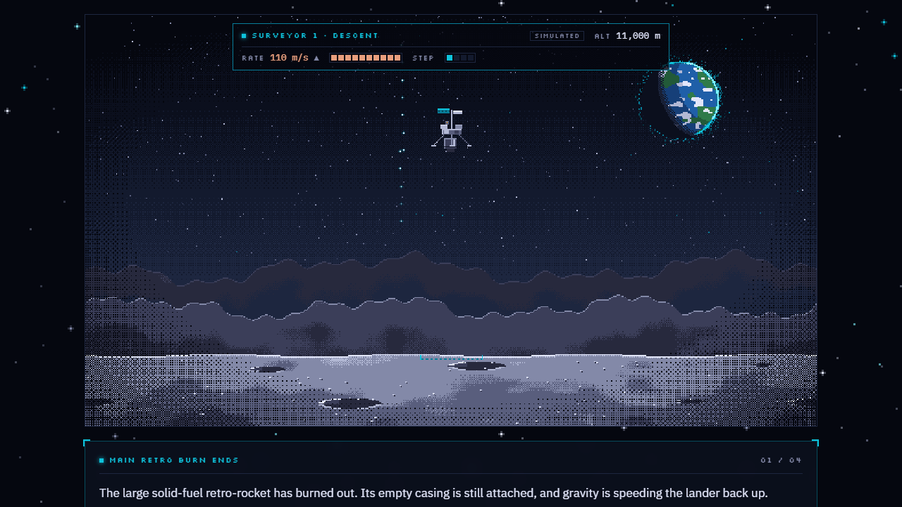
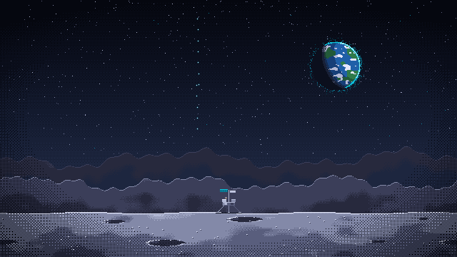
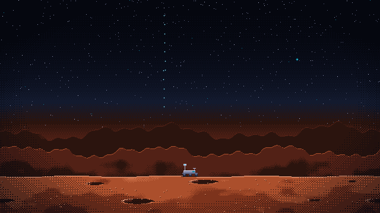
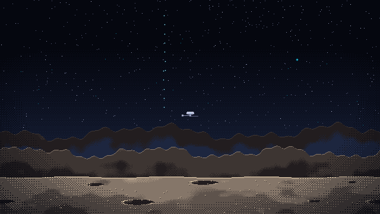
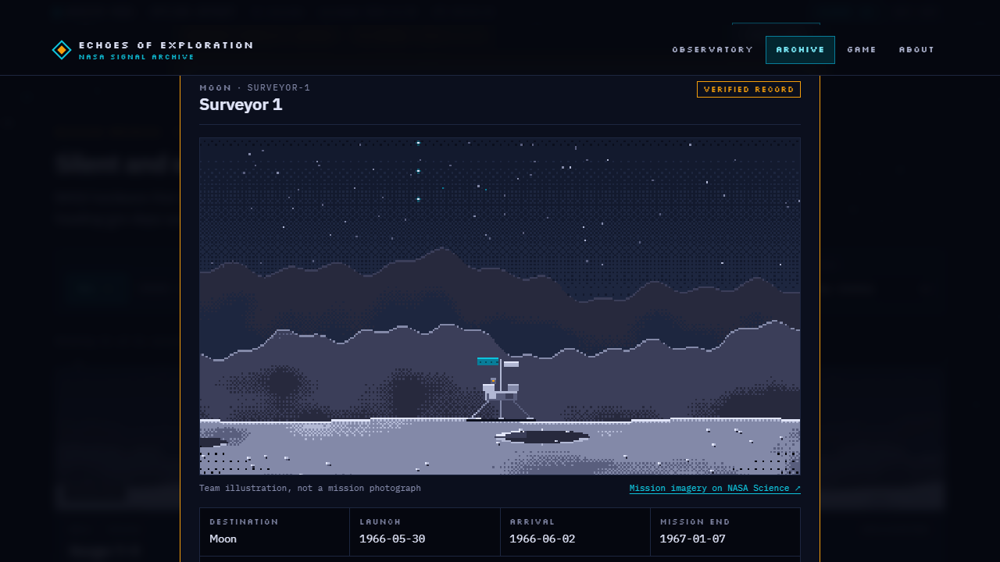
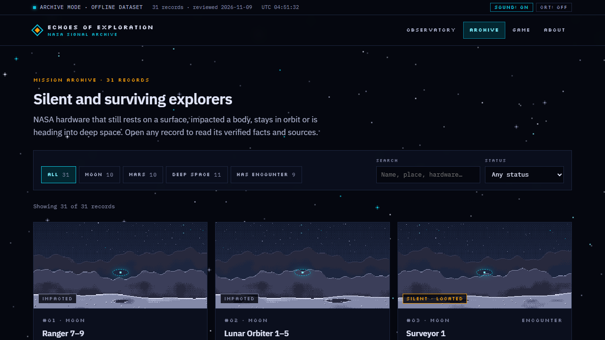
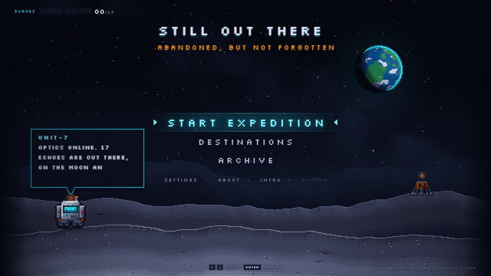
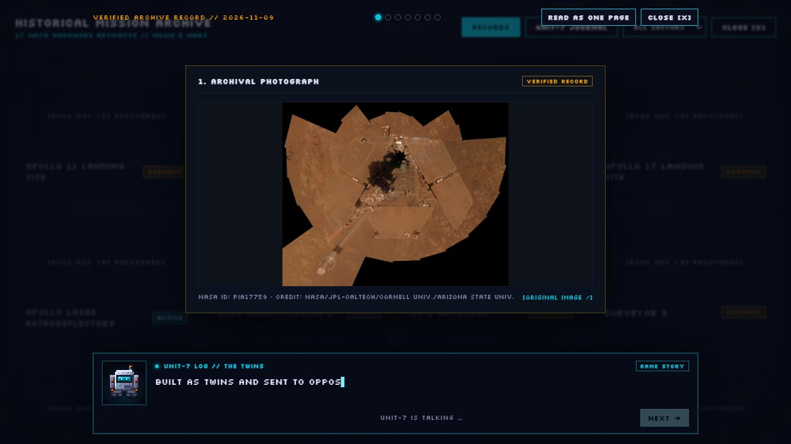
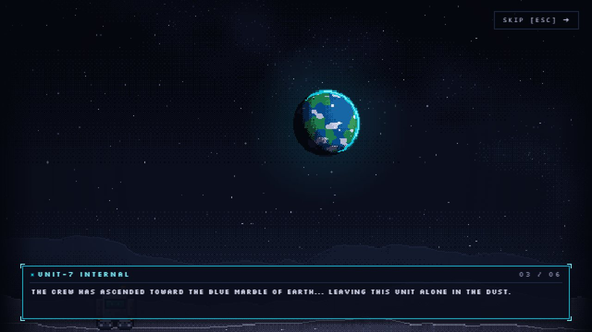

What changed from v1
Four decisions that fix the look
The second palette in the practice DESIGN.md is retired. The 24 colours stay, and a six-step asteroid → Pluto tan ramp is added for deep space.
Silkscreen covers eyebrows, buttons, badges, HUD keys and the title screen. Headings and reading text use IBM Plex Sans.
Four parallax layers drive the hero, chapter art, archive thumbnails and gameplay. Shades are dithered only at their edges, so surfaces read calm.
The glowing landing pad became a cyan UI target bracket, because Surveyor 1 had none. A sprite appears only for hardware it actually depicts.
The look, view by view
v2 screens from the build

Side view: landing encounter
- Four layers: sky with stars and Earth, far ridge, mid ridge, near ground. Each is darker and cooler with distance.
- HUD: translucent fill, 1px cyan edge, mono digits, segmented gauges. A
Simulatedtag appears when values aren't real telemetry. - Target bracket in dashed cyan marks the site. It is UI, not hardware.
- Decisions sit in the caption console below the scene, never over the art.




Record reader
- Amber first: verified record, image frame (2× zoom), a credit strip that says what the image is, readouts, sources.
- Cyan below: the Memory Echo in a bracketed console, marked as dramatized.
- Real NASA photos with ID and credit go in the frame once they're added to
public/images/.

Catalog grid
- The thumbnail uses the chapter scene, framed at a different stretch of horizon for each record, with a dashed cyan signal ring.
- Outlined badges with their own word and colour, so colour is never the only cue.
- Titles in Plex Sans 600, the story hook in cyan, metadata in mono.
30 colours
Palette
Four ground ramps and two accent ramps. Shadows go to indigo, never black. Select a swatch to copy its hex.
Three OFL fonts
Typography
Eyebrows, nav, buttons, tags, badges, HUD keys, step counters and the title screen. Always uppercase with wide tracking. Never used for sentences.
h1 32/24px, h2 22/18px, body 16/15px at 1.6 line height, max 62ch. Weight 600, tracking −0.02em on headings.
Dates, IDs, coordinates and HUD values, with tabular figures.
Live samples
Components
“A machine learning how to touch another world gently.”
Game story · dramatized
Cyan corner brackets, a step counter at the top right, and text only inside the console.
Gauges instead of tables. Lit cells turn haze peach when the trend is unsafe.
Square corners, a 4px under-step on the primary button, and a 1px press. On the title menu the active item gets a glow band and arrow markers.
Outlined, each with its own word and colour. Records whose status changes over time get the dashed review flag.
“They learned by looking all the way down.”
Cyan frame. Dramatized and first-person. Machines are never conscious.
Facts come from src/data/*.json only, with the date reviewed and a link to the primary NASA source.
Amber frame, always sourced. Never mixed with the story voice.
Hand this to anyone drawing
Rules
| Area | Rule |
|---|---|
| Grid | 640×360, 360 scene px tall, integer scaling only, image-rendering: pixelated. Wide screens widen the scene instead of stretching it. |
| Light | One cool light from Earth or the sky, at the upper right. 1px lit rims. Shadows dither into indigo, never black. |
| Surfaces | Flat shades, dithered only in a narrow band where two shades meet. No salt-and-pepper noise. |
| Depth | Four layers (sky, far ridge, mid ridge, near ground) with parallax 0.03 / 0.15 / 0.35 / 0.7. Ground starts around y 298, leaving two-thirds sky. |
| Sprites | Hardware 24–40px, a lit edge facing the light, an indigo contact shadow, orange only on lamps and thrust. Show a sprite only for hardware it depicts. |
| FX | Dithered bloom, light vignette, ground-hugging dust. No flashing, no shake. Reduced motion stops drift and twinkle, but gameplay still advances. |
| UI | Translucent indigo panels, 1px cyan edge, corner brackets or 8px notches, square corners, Silkscreen for labels only. |
| Layout | Gutters clamp(16px, 5.5vw, 80px), max width 1200px, one idea per section, works from 360px to 4K. |
| Never | NASA insignia, aliens, plants, coins, HP bars, inventory, #000, rounded or pill buttons, unlabelled illustrations posing as photos. |
Where it came from
Practice build (v1 reference)
The Still Out There practice game that set the palette and scene structure. Look at it for mood only. The robot hero, the jetpack landing and the landing pad are dropped.
Show the practice-build screens




